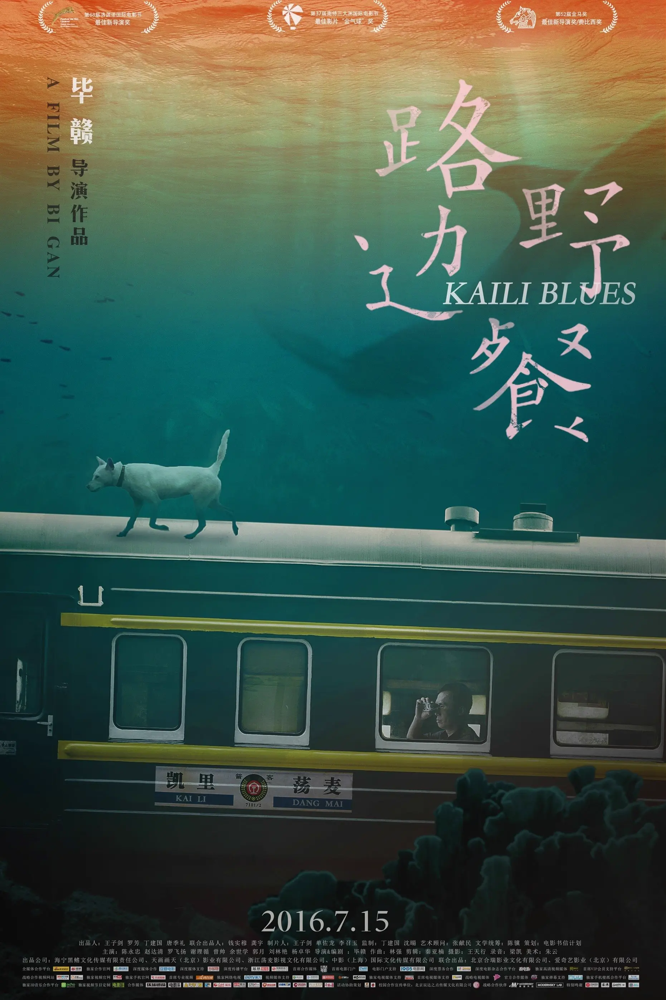

看《路边野餐》
Kaili Blues
{kind=link}

佛告须菩提
尔所国土中
所有众生
若干种心
如来悉知
何以故
如来说
诸心皆为非心
是名为心
所以者何
须菩提
过去心不可得
现在心不可得
未来心不可得
最早是听 Aliosha 的 路边野餐 知道了 《路边野餐》 这部电影，最近听了 导演毕赣×罗永浩！清醒、深刻、独一无二的造梦者 才终于找来看了一遍。
故事发生在凯里、麦荡、镇远之间，那里有高山、蜿蜒的道路、两侧深绿的树、朦胧的雾、幽绿的河水。我对这些地方在哪，相隔多远没有概念，只知道到连接它们的是轨道和火车，给我的感觉就像是在一个隔绝的空间里一般。
影片里的环境是有点偏蓝调、偏暗淡的，像是始终在一个阴天里。
影片里有「野人」，会冷不丁地冒出来，或许会攻击人，在这样的一个隔绝空间里，增添了一些危险感，不知道这个「野人」什么时候会出现。在这样阴沉的画面里，看到那双女式绣花鞋在浑浊幽绿的河里漂浮，也让我感到一丝诡异。
死去的儿子、无法在一起的情人、死去的母亲、鬼混的兄弟、入狱、离婚死去的妻子、喜欢的人即将远离……影片整体是带着一种悲情忧伤的色调的。
中间有一段四十多分钟的长镜头，拍的真好，是整部影片的高潮。包圣美唱的插曲小茉莉很好听，陈升为理发店老板娘唱的小茉莉也很动人；卫卫载着陈升在蜿蜒的道路上行驶，让我想起了 《南国再见，南国 》 里那段开着摩托的画面，都有着一种美感；镜头跟着洋洋在街道穿梭，乘着小舟过河，河上她背起了导游词，而远处的卫卫也在大声背诵着，到了对岸以为要去另一个地方，却又沿着长长的桥绕了回来，看完后这段画面也久久地残留在脑中。
故事的时间线不是顺序的，看完之后对整体剧情其实还不太明白，像是现实和梦境的交织，剧情间主角还会念着诗1，那些诗也很美，让影片整体有种诗歌般的朦胧感，美感。
电影的最后，响起了李泰祥的 告别，这是老医生给陈升的磁带里的歌，这张磁带本来是托陈升带去给她的朋友林爱人的，而陈升在告别时将磁带给了老板娘。李泰祥和唐晓诗的声音，深情、有种年代感，让人在看完影片后久久回味， 思绪像是歌声一样飘得遥远。「如果我唱，它就是一首歌；如果我不唱，它就是一首诗。」
喜欢影片里的环境、诗歌、长镜头、音乐，以及整体画面给人诗一般的感觉，是一部我愿意再看一遍的电影。
里面喜欢的两首歌：
- 🎵 小茉莉 - 包圣美
- 🎵 告别 - 李泰祥 / 唐晓诗
影片中的诗歌
背着手
在亚热带的酒馆
门前吹风
晚了就坐下
看柔和的闪电
背着城市
亚热带季风的河岸
淹没还不醉的桥
不醉的建筑
用静默解酒
明天 阴
摄氏三至十二度
修雨刷片 带伞
在戒酒的意识里
徒然下车
走路到天晴
照旧打开
身体的衣柜
水分子穿越纤维
没有了音乐就退化耳朵
没有了戒律就灭掉烛火
像回到误解照相术的年代
你摄取我的灵魂
没有了剃刀就封锁语言
没有了心脏却活了九年
山是山的影子
狗 懒得进化
夏天
人的酶很固执
灵魂的酶 像荷花
许多夜晚重叠
悄然形成黑暗
玫瑰吸收光芒
大地按捺清香
为了寻找你
我搬进鸟的眼睛
经常盯着路过的风
命运布光的手
为我支起了四十二架风车
源源不断的自然
宇宙来自于平衡
附近的星球来自于回声
沼泽来自于地面的失眠
褶皱来自于海
冰来自于酒
通往岁月楼层的应急灯
通往我写诗的石缝
一定有人离开了会回来
腾空的竹篮装满爱
一定有某种破碎像泥土
某个谷底像手一样摊开
今天的太阳
像瘫痪的卡车
沉重的运走整个下午
白醋 春梦 野柚子
把回忆塞进手掌的血管里
手电的光透过掌背
仿佛看见跌入云端的海豚
所有的转折隐藏在密集的鸟群中
天空与海洋都无法察觉
怀着美梦却可以看见
摸索颠倒的一瞬间
所有的怀念隐藏在相似的日子里
心里的蜘蛛模仿人类张灯结彩
携带乐器的游民也无法传达
这对望的方式接近古人
接近星空
冬天是十一月 十二月
一月 二月 三月 四月
当我的光曝在你身上
重逢就是一间暗室
另见：《路边野餐》毕赣诗集 by NO TEARS